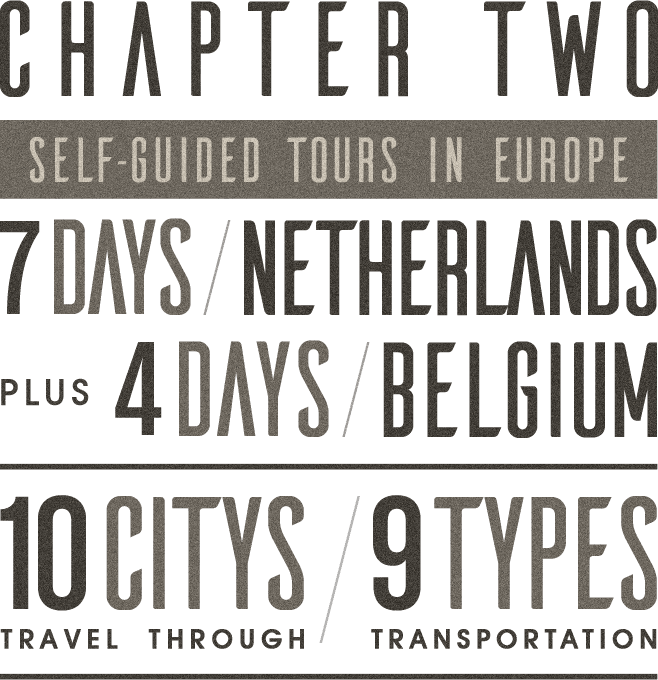
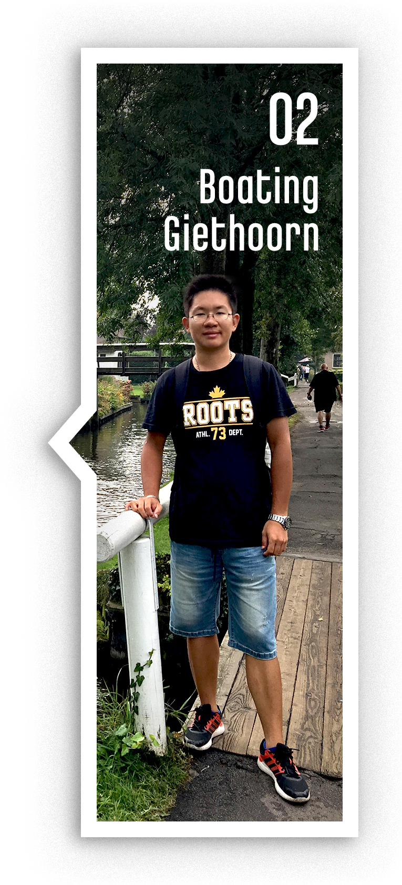
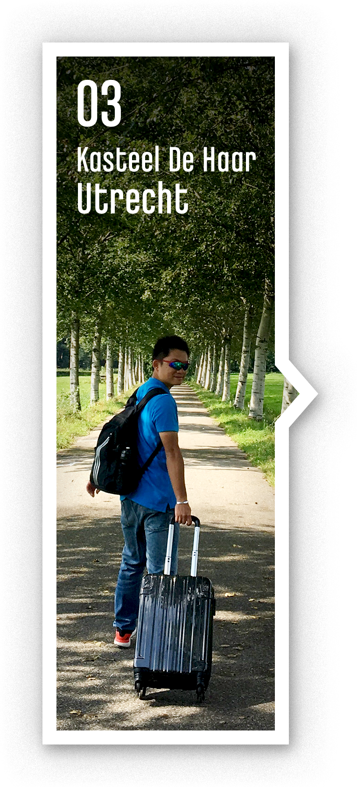
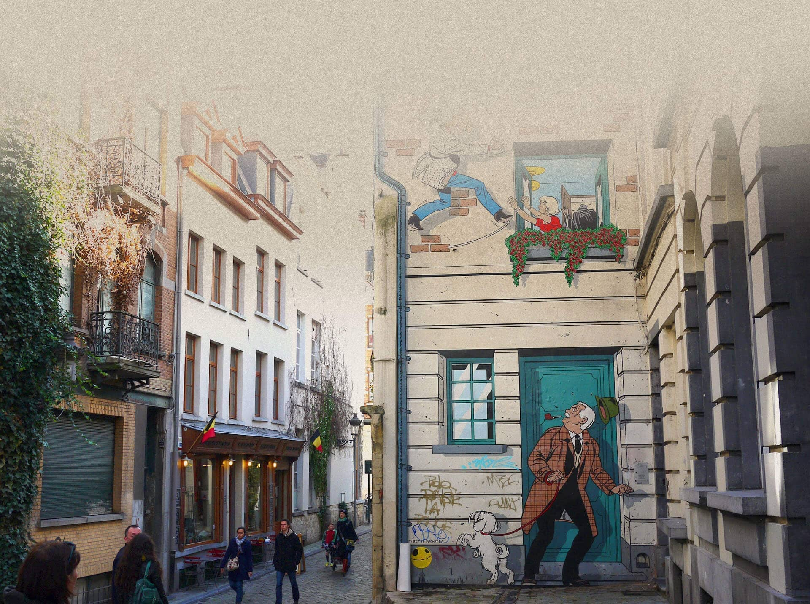
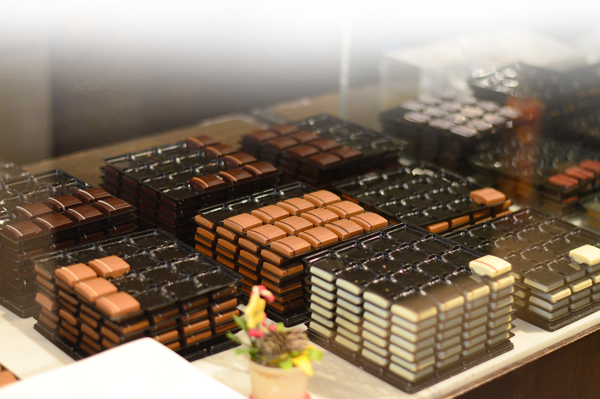
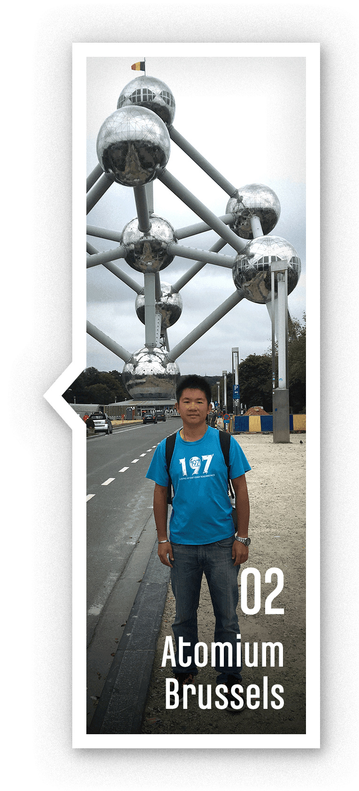

- Amsterdam
- Giethoorn
- Utrecht
- Leiden
- Delft
- The Hague
- Rotterdam
- Brussels
- Ghent
- Bruges
-
RESEARCH & planning
- Collect information from Google and bloggers
- Get ideas about what to see & do there, the transportations, the culture, the views, the food, the hotels and the expense
-
Based on the information, actualize your trip in written form
- Decide the cities want to go, and list the local attractions
- Adjust the time in each city. Basically, one city, one day; however a bigger city or the city interests you most could stay longer
- Make plans which city will stay overnight, then search hotels
- Search the transportations (time and fares) to go between cities
-

book flight & THALYS tickets, and hotels
- Early reservations could get cheaper price
-
The tips for hotel searching:
- Use bloggers recommendation as reference
- On the hotel booking website, for example Booking.com. Compare prices,locations (either close to stations or downtowns), qualities and reviews
- Keep the confirmation emails. *16/19.2vwember the credit card used for the booking, which must be presented upon arrival in order to check in
- Pay attention to see if the reservations are refundable and if they need to re-confirm before the trip
-
before the trip, review plans, add more details
-
Get ideas of all types of transpostation in the destinations
- Know the cheapest ways to get around
- Make detailed plans to go between the attractions
- Be sure the hours & admission of mesuems, see if you need to buy the tickets online in advance. List the must-try local food, restaurants, and souvenirs
- Learn a few userful native language. Check weather conditions. Exchange currency. Check the information of the Taiwan embassy in the destinations. Buy travel insurance
-
Get ideas of all types of transpostation in the destinations

A visit isn’t complete without enjoying the canals.
They are the symbol of the land and of great cultural and historical value.

The windmills are not just a pleasure to the eye in this typical, flat landscape,
they played a crucial role in the development of the country.

It’s a kingdom of bicycles. A country where bikes are the most popular form of transport.
In Amsterdam, there are more bicycles than people.



Marken
Giethoorn
Marken
The Hague
Rotterdam
Delft
Gethoorn
Leiden
Brussel is the comic capital of the world.
The murals connect to the history and culture.

Waffles, fries, chocolate, beer…
Belgium is famous for its junk food!


2017 Cycling and Travel
© 2018 Alexblue / All Right Reserved